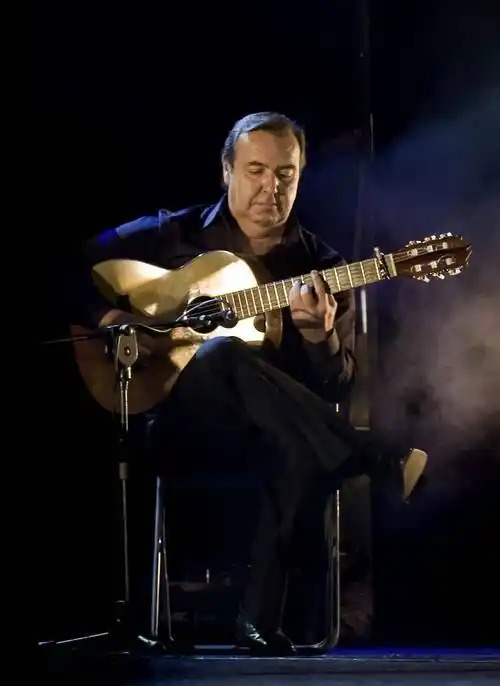
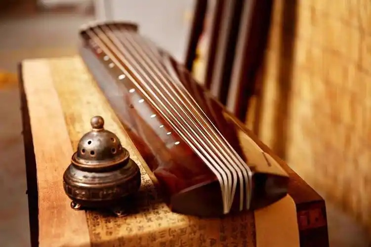
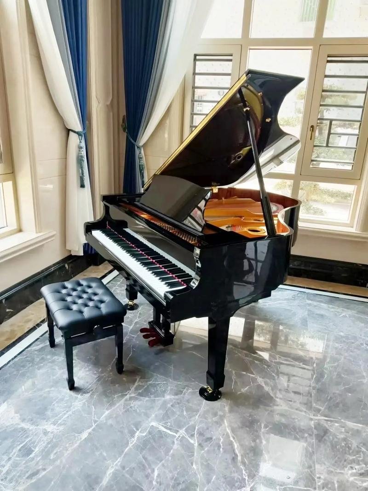

探索乐器背后的历史文化故事，追溯音乐文明的发展脉络
从战国时期的二十五弦到现代二十一弦，古筝见证了中国音乐文化的演变历程。它不仅是乐器，更是中华文明的音乐符号。
西塔琴不仅是乐器，更是印度哲学与精神世界的音乐表达。通过拉格旋律体系，它连接着天地与人心。
三百年钢琴发展史，见证西方音乐从巴洛克到现代的辉煌历程。从巴赫到肖邦，钢琴始终是音乐创作的核心。
尺八以其独特的音色和禅宗文化背景，成为东方音乐中不可或缺的管乐器代表。

弗拉门戈吉他以其独特的演奏技巧和强烈的情感表达风靡世界。

古筝承载着数千年的中华音乐文明。
从新奥尔良到全世界，爵士乐如何改变音乐版图。
非洲鼓不仅是乐器，更是部落文化的载体。
探索西塔琴在印度古典音乐中的独特地位。

三百年的钢琴发展史见证了西方音乐从巴洛克到现代的辉煌历程。
古琴作为中国最古老的弹拨乐器之一，承载着深厚的文化内涵。